5505A MULTI-FUNCTION COMPONENTS
- Path
- Descriptions > 55 ELECTRICAL EQUIPMENT > 5505 INSTRUMENT/GUAGE ELECTRICAL WIRING > 5505A MULTI-FUNCTION COMPONENTS
- Kind
- system description
- Applies to
- all engines; all production periods
- Interactive page
- https://sloeber94.github.io/elrnDB-aGt/en/#/125000399
Applies to: engines: 1.8 T.SPARK, 2.0 JTS, 1.9 JTD 16V; all production periods
SPECIFCATIONS
ENGINE BAY CONTROL UNIT
Electromechanical control unit including fuses (maxi and mini), relays and circuits for interconnecting front wiring and radiator prewiring.
These wires are connected to the control unit via fixed joints. A tray beneath the protectivecover houses any further connectors/relays/fuses
A fastening is provided on the lower cover for sealed fuse carrier connectors (maxi and mini type).
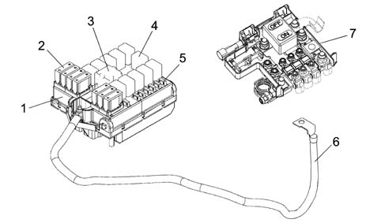
1 - Engine bay control unit (CVM)
2 - System protection maxifuse
3 - Maxi type relay
4 - Micro type relay
5 - System protection mini fuse
6 - Connection cable between battery control unit (CBA) and engine bay control unit (CVM)
7 - Battery control unit (CBA)
The maxi fuses grouped on the battery control unit (CBA) and engine bay control unit (CVM) are connected directly to the battery positive terminal and protect the main power supply lines.
The engine bay control unit (CVM) is described below
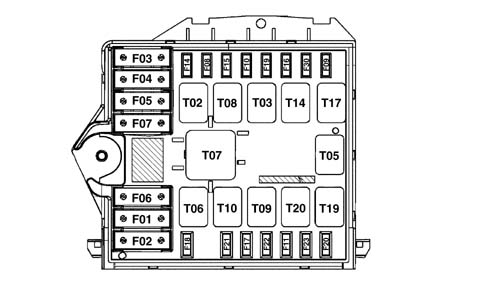
In the more comprehensive version, the engine bay control unit protects the electrical equipment by means of the following fuses:
CODE | COMPONENT | amp. | TYPE |
|---|---|---|---|
F-1 | FUSE GLOW PLUG PREHEATING | 50 | MAXI |
F-2 | FUSE FACIA CONTROL UNIT 2 | 50 | MAXI |
F-3 | FUSE SELESPEED PUMP | 30 | MAXI |
F-4 | FUSE BRAKE NODE (NFR) | 60 | MAXI |
F-5 | FUSE SOLENOID CLIMATE CONTROL SYSTEM | 40 | MAXI |
F-6 | FUSE RADIATOR FAN 1 | 40 | MAXI |
F-7 | FUSE RADIATOR FAN 2 | 50 / 60 | MAXI |
F-8 | FUSE HEATING ADDITIONAL (PTC 2) (not used) | 30 | mini |
F-9 | FUSE HEADLAMP WASHER | 20 | mini |
F-10 | FUSE HORNS | 15 | mini |
F-11 | FUSE I.E. SECONDARY SERVICES | 15 | mini |
F-14 | FUSE RIGHT MAIN BEAM | 10 | mini |
F-15 | FUSE LEFT MAIN BEAM | 10 | mini |
F-16 | FUSE 15/54 I.E. SYSTEM | 7.5 | mini |
F-17 | FUSE I.E. PRIMARY SERVICES | 7.5 | mini |
F-18 | FUSE +30 I.E. CONTROL UNIT | 7.5 | mini |
F-19 | FUSE COMPRESSOR | 7.5 | mini |
F-20 | FUSE HEATED DIESEL FILTER | 20 | mini |
F-21 | FUSE FUEL PUMP | 15 | mini |
F-22 | FUSE IGNITION COILS/ INJECTORS | 15 / 20 | mini |
F-23 | FUSE FOR RELAY T20 (preparation) | - | mini |
F-30 | FUSE FOG LIGHTS | 15 | mini |
The following relays are present in the engine bay control unit:
CODE | COMPONENT | amp. | TYPE |
|---|---|---|---|
T02 | MAIN BEAM RELAY | 20 | micro |
T03 | HORN RELAY | 20 | micro |
T05 | COMPRESSOR RELAY | 20 | micro |
T06 | RADIATOR FAN 1ST SPEED RELAY | 30 | micro |
T07 | RADIATOR FAN 2ND SPEED RELAY | 50 | MAXI |
T08 | ADDITIONAL HEATER ADDITIONAL (PTC 2) (not used) | 30 | micro |
T09 | INJECTION RELAY | 30 | micro |
T10 | FUEL PUMP RELAY | 20 | micro |
T14 | FOG LIGHTS RELAY | 20 | micro |
T17 | HEADLAMP WASHER RELAY | 20 | micro |
T19 | HEATED DIESEL FILTER RELAY | 20 | micro |
T20 | SPARE RELAY | - | micro |
Wiring diagram of engine bay control unit interior (CVM)
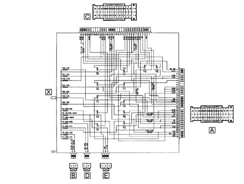
Rear view
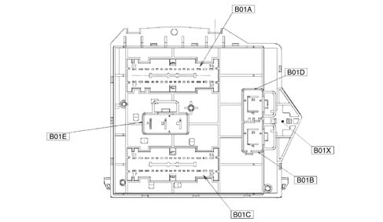
B01E 3 PIN connector
B01A 32 PIN connector
B01D 2 PIN connector
B01B 2 PIN connector
B01C 32 PIN connector
B01X 1 PIN connector (on front section)
Pin out
B01X Connector (1 way)
Applies to: engines: 1.8 T.SPARK; all production periods
Conn. | Pin | Function |
|---|---|---|
B01X | 1 | Cable connected to battery positive from CVM fuse (CBA) |
Applies to: engines: 1.8 T.SPARK, 2.0 JTS, 1.9 JTD 16V; all production periods
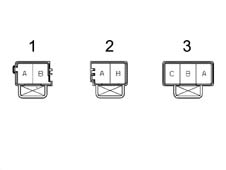
1 - Connector B01B
2 - Connector B01D
3 - Connector B01E
Applies to: engines: 1.8 T.SPARK; all production periods
Conn. | Pin | Function |
|---|---|---|
B01B | B | +30 CPL option from F-2 |
B01B | A | + 30 for glow plug preheating system from F-1 |
B01D | A | +30 for solenoid Climate control system from F-5 |
B01D | B | +30 NFR (ABS(VDC) from F-4 |
B01E | C | Power supply from F-6 for engine cooling fan (first level) downstream of T06 |
B01E | B | Power supply from F-6 for engine cooling fan (first level) upstream of T06 |
B01E | A | Power supply from F-7 for engine cooling fan (second level) |
Applies to: engines: 1.8 T.SPARK, 2.0 JTS, 1.9 JTD 16V; all production periods
B01A connector (32 way)
B01A | 32 | Additional heater power supply (PTC 2) from F -8 (not used) |
|---|---|---|
B01A | 31 | +30 Selespeed pump from F-3 |
B01A | 30 | 15/54 from ignition switch |
B01A | 29 | Not available |
B01A | 28 | Low-tone horn power supply from F-10 |
B01A | 27 | High-tone horn power supply from F-10 |
B01A | 26 | PTC 2 relay feed negative signal |
B01A | 25 | Left main beam power supply from F-15 |
B01A | 24 | Power supply from F-15 (preparation) |
B01A | 23 | Fog lamp relay (T14) control negative signal from NBC |
B01A | 22 | Right main beam power supply from F-14 |
B01A | 21 | Horn relay control negative signal (T03) from stalk unit |
B01A | 20 | 15/54 from F -16 for engine management relay coils - selespeed starting relay |
B01A | 19 | Not available |
B01A | 18 | Power supply from F-23 relay T20 (preparation) |
B01A | 17 | 85 relay (T20) (preparation) |
B01A | 16 | Power supply from F-21 (fuel pump relay) (preparation) |
B01A | 15 | "50" from ignition switch |
B01A | 14 | 86 relay T20 (preparation) |
B01A | 13 | Not available |
B01A | 12 | Main beam relay control negative signal (T02) from NBC |
B01A | 11 | INT/A from F-31 |
B01A | 10 | INT/A for climate control unit from F-31 |
B01A | 9 | INT/A for emission control sensor from F-31 |
B01A | 8 | Not available |
B01A | 7 | Not available |
B01A | 6 | Headlamp washer relay control negative signal (T17) from NBC |
B01A | 5 | Right fog lamp power supply from F-30 |
B01A | 4 | Left fog lamp power supply from F-30 |
B01A | 3 | Not available |
B01A | 2 | +30 from F18 (preparation) |
B01A | 1 | Headlamp washer pump power supply from F-9 |
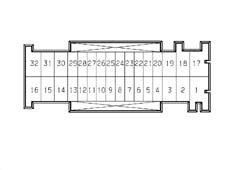
B01C connector (32 way)
B01C | 32 | i.e. primary service power supply from F-17 |
|---|---|---|
B01C | 31 | i.e. primary service power supply from F-17 |
B01C | 30 | Fuel pump power supply from F-21 |
B01C | 29 | 86 fuel pump relay coil (T10) |
B01C | 28 | Engine cooling fan low speed relay control negative signal (T06) from NCM |
B01C | 27 | Not available |
B01C | 26 | Not available |
B01C | 25 | Not available |
B01C | 24 | Not available |
B01C | 23 | +30 from F-18 for NCM |
B01C | 22 | Diesel filter heater relay control negative signal (T19) |
B01C | 21 | Engine cooling fan high speed relay control negative signal (T07) from NCM |
B01C | 20 | Not available |
B01C | 19 | Starter motor electromagnet power supply (50) |
B01C | 18 | i.e. primary service power supply F-22 (coils/injectors) |
B01C | 17 | Power supply from F-23 relay T20 (preparation) |
B01C | 16 | Not available |
B01C | 15 | Not available |
B01C | 14 | Not available |
B01C | 13 | Not available |
B01C | 12 | 86 I.E. main relay coil (T09) |
B01C | 11 | Fuel pump relay control negative signal (T10) from NCM |
B01C | 10 | i.e. relay main control negative signal (T09) from NCM |
B01C | 9 | 15/54 from F-16 for NCM (key sense) |
B01C | 8 | 15/54 from F-16 for engine control relay coils |
B01C | 7 | i.e. secondary service power supply from F-11 |
B01C | 6 | Diesel filter heater relay control positive signal (T19) from D+ alternator |
B01C | 5 | Air conditioner compressor relay control negative signal (T05) from NCM |
B01C | 4 | Air conditioner compressor power supply from F-19 |
B01C | 3 | 86 relay T20 (preparation) |
B01C | 2 | Power supply from F-20 for diesel filter PTC |
B01C | 1 | Not available |
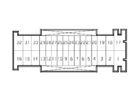
FACIA CONTROL UNIT (CPL)
This is located on the Body Computer (NBC)
Electromechanical control unit (CPL) and body computer electronic node (NBC) fitted to the underfacia area to the left of the steering wheel are interconnected and form a single unit known as the facia node (NPL). The control unit is equipped with fuses and relays
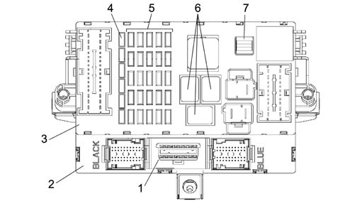
1 - EOBD connector diagnostic socket
2 - Body computer (NBC)
3 - Facia control unit (CPL) fitted to NBC node (CPL+NBC=NPL: Facia node)
4 - Reserve fuses
5 - System protection fuses
6 - Relays
7 - Fuse removal clip
The following figure shows a front view of the control unit
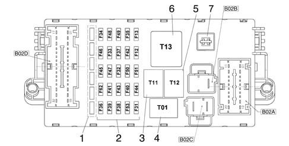
1 - Reserve fuses
2 - Protection fuses
3 - Heated rear windscreen relay (T11)
4 - Dipped headlamps relay (T01)
5 - Key discharge relay 1 (T12)
6 - Key discharge relay 2 (T13)
7 - Clip
B02C - 2 pin connector
B02B - 1 pin connector
B02D - 32 pin connector
B02A - 20 pin connector
Facia control unit CPL protects the electrical equipment by means of the following fuses:
CODE | COMPONENT | amp. | TYPE |
|---|---|---|---|
F-12 | FUSE RIGHT DIPPED BEAM | 10 | mini |
F-13 | FUSE LEFT DIPPED BEAM /CAF | 10 | mini |
F-31 | FUSE HEATER UNIT/NCL RELAY COIL INT/A | 7.5 | mini |
F-32 | FUSE (+30) NCR | 15 | mini |
F-33 | FUSE LEFT REAR ELECTRIC WINDOW (not used) | 20 | mini |
F-34 | FUSE RIGHT REAR ELECTRIC WINDOW (not used) | 20 | mini |
F-35 | FUSE REVERSING LIGHT, CRUISE CONTROL, LIGHTING NCL | 7.5 | mini |
F-36 | FUSE (+30) TRAILER CONTROL UNIT (not used) | 10 | mini |
F-37 | FUSE STOP, NQS | 10 | mini |
F-38 | FUSE DOOR LOCK | 20 | mini |
F-39 | FUSE +30 SERVICES (RADIO, SEN. VOLUME, DIAGNOSTIC SOCK. (EOBD), PRED. CAR PHONE, NCL, NPG, , NIT | 15 | mini |
F-40 | FUSE HEATED REAR WINDSCREEN | 30 | mini |
F-41 | FUSE MIRRORS/HEATED NOZZLES | 7.5 | mini |
F-42 | FUSE (INT) NFR, | 7.5 | mini |
F-43 | FUSE TWO-WAY PUMP/ WIPER | 30 | mini |
F-44 | FUSE CIGARETTE LIGHTER | 20 | mini |
F-45 | FUSE HEATED SEATS | 15 | mini |
F-46 | FUSE SUN ROOF (not used) | 15 | mini |
F-47 | FUSE POWER SUPPLY NPG POWER (L.G.) | 20 | mini |
F-48 | FUSE POWER SUPPLY NPG (L.P.) | 20 | Mini |
F-49 | FUSE (INT) CONTROL/SECONDARY SERVICE LIGHTING, ELECTRIC WINDOWS | 7.5 | Mini |
F-50 | FUSE (INT) AIR-BAG | 7.5 | Mini |
F-51 | FUSE (INT) RADIO (NRR) | 7.5 | Mini |
F-53 | FUSE +30 TURN SIGNAL/HAZARD WARNING, NQS | 10 | Mini |
F-62 | FUSE ELECTRIC WINDOWS CONTROLUNITS | 15 | Mini |
Pin out
Front view
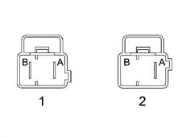
1 - B02C connector (2 way)
2 - B02B connector (2 way)
Applies to: engines: 1.8 T.SPARK; all production periods
Conn. | Pin | Function |
|---|---|---|
B02C | A | +30 from CPL CBA fuse |
B02C | B | +30 from F-2 CVM |
B02B | B | Not available |
B02B | A | +30 from F -2 for OPT (additional fuse box) |
Applies to: engines: 1.8 T.SPARK, 2.0 JTS, 1.9 JTD 16V; all production periods
B02D CONNECTOR (32 way)
Applies to: engines: 1.8 T.SPARK; all production periods
Conn. | Pin | Function |
|---|---|---|
B02C | A | +30 from CPL CBA fuse |
B02D | 1 | Power supply for NVB from F-33 (left rear electric window) (not used) |
B02D | 2 | Power supply for NVB from F-34 (right rear electric window) (not used) |
B02D | 3 | Supply from F-46 (preparation) |
B02D | 4 | Heated rear window power supply from F-45 |
B02D | 5 | Supplementary brake light power supply from F-37 |
B02D | 6 | Brake light positive signal (preparation) |
B02D | 7 | Reversing signal for parking sensors |
B02D | 8 | Right reversing light power supply from switch on gearbox |
B02D | 9 | Rear wiper brake signal |
B02D | 10 | B – CAN A for NPG, NVB |
B02D | 11 | + 30 from F-32 for NCR |
B02D | 12 | Supply from F -62 for electric windows control units |
B02D | 13 | +30 from F -36 for preparation for Trailer Control Unit (not used) |
B02D | 14 | Power supply from F-44 for luggage compartment power point |
B02D | 15 | Heated rear window power supply from F-40 |
B02D | 16 | Door lock motor control |
B02D | 17 | NPG power supply (electric window/rh front mirror) from F-48 |
B02D | 18 | Door release motor control |
B02D | 19 | INT from F -49 for electric windows control units |
B02D | 20 | Rearscreen wiper motor power supply |
B02D | 21 | INT from F-49 for car phone |
B02D | 22 | Signal from seat belt unfastened warning light indicator switch |
B02D | 23 | INT from F-49 for Fog sensor |
B02D | 24 | INT from F-49 for l.p. front window button lighting |
B02D | 25 | INT from F-51 (preparation) |
B02D | 26 | INT from F-51 (preparation) |
B02D | 27 | INT from F-51 (preparation) |
B02D | 28 | B - CAN B for NPG, NVB |
B02D | 29 | Not available |
B02D | 30 | NPG power supply (left front electric window/front mirror) from F-47 |
B02D | 31 | Mirror demisting/nozzle J.C. power supply from F-41 |
B02D | 32 | Tank fuel pump power supply |
Applies to: engines: 1.8 T.SPARK, 2.0 JTS, 1.9 JTD 16V; all production periods
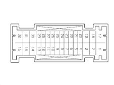
B02A CONNECTOR (20 way)
Applies to: engines: 1.8 T.SPARK; all production periods
Conn. | Pin | Function |
|---|---|---|
B02A | 1 | Left headlamp corrector actuator control signal |
B02A | 1 | Right headlamp corrector actuator control signal |
B02A | 2 | Corr. actuator power supply Left headlamp from F-13 |
B02A | 2 | Corr. actuator power supply Right headlamps from F-13 |
B02A | 3 | Left dipped beam power supply from F-13 |
B02A | 4 | I.E./EOBD failure warning light control signal from NCM |
B02A | 5 | ASR deactivation positive control signal |
B02A | 6 | ASR warning light control negative signal in dashboard (conn. withh PM6) |
B02A | 7 | Ignition switch INT/A from F-31 for CVM |
B02A | 8 | Reversing light power supply from switch on gearbox |
B02A | 9 | Fuel pump power supply from relay |
B02A | 10 | Windscreen wash/wipe power supply from F-43 |
B02A | 11 | INT for NFR |
B02A | 12 | Right dipped beam power supply from F-12 |
B02A | 13 | INT from F-51 for NCR |
B02A | 14 | INT from F-37 for brake lights (at switch on pedal unit) |
B02A | 15 | Brake light power supply from switch on pedal unit |
B02A | 16 | Brake light signal for NFR |
B02A | 17 | INT from F-35 for Cruise Control/N.C. Stop Control |
B02A | 18 | INT from F-35 for NCL lighting |
B02A | 19 | INT from F-35 for reversing lghts (at switch on gearbox) |
B02A | 20 | CPL earth race (predisposition) |
Applies to: engines: 1.8 T.SPARK, 2.0 JTS, 1.9 JTD 16V; all production periods
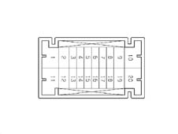
Rear view
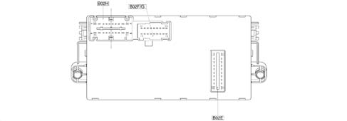
B02H - 20 pin connector
B02F/ G - 9+9 pin connector
B02E - 10 pin connector
BO2H CONNECTOR (20 way)
Applies to: engines: 1.8 T.SPARK; all production periods
Conn. | Pin | Function |
|---|---|---|
B02H | 20 | Power supply from F-47 |
B02H | 19 | Power supply from F-48 (preparation) |
B02H | 18 | Not available |
B02H | 17 | B - CAN A for NRR |
B02H | 16 | ASR deactivation positive control signal |
B02H | 15 | ASR warning light control negative signal in dashboard ( |
B02H | 14 | INT/A from F-31 (preparation) |
B02H | 13 | INT from F-51 (preparation) |
B02H | 12 | INT from F-51 for clock spring interface |
B02H | 11 | INT from ignition switch |
B02H | 10 | CPL power earth |
B02H | 9 | Cigarette lighter power supply from F-44 |
B02H | 8 | +30 from F-39 for mobile phone predisposition |
B02H | 7 | + 30 from F-39 for NRR |
B02H | 6 | INT from F-50 for CAB |
B02H | 5 | B - CAN B for NRR |
B02H | 4 | INT from F-49 for PCS |
B02H | 3 | INT from F-49 for facia control lighting J.Connector |
B02H | 2 | Parking light control positive signal from ignition switch |
B02H | 1 | INT/A from ignition switch |
Applies to: engines: 1.8 T.SPARK, 2.0 JTS, 1.9 JTD 16V; all production periods
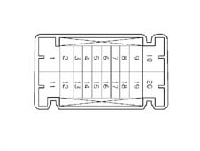
CONNECTOR B02F/G (9+9 way)
Applies to: engines: 1.8 T.SPARK; all production periods
Conn. | Pin | Function |
|---|---|---|
B02G | 10 | Signal earth from NBC (preparation) |
B02G | 11 | Rear wiper motor power supply from stalk unit (not used) |
B02G | 12 | INT from F-49 for PCC control lighting |
B02G | 13 | Exterior lighting for F-51 (predisposition) |
B02G | 14 | Power supply from F-13 for headlamp alignment corrector on NQS |
B02G | 15 | Rear wiper brake signal (not used) |
B02G | 16 | + 30 from F-32 (predisposition) |
B02G | 17 | Stalk unit power supply for rear wiper from F-52 |
B02G | 18 | Headlamp alignment corrector control signal |
B02F | 1 | I.E./EOBD failure warning light control to NQS |
B02F | 2 | INT from F-37 (preparation) |
B02F | 3 | Not available |
B02F | 4 | Not available |
B02F | 5 | Seat belts warning light control signal for Air Bag |
B02F | 6 | Not available |
B02F | 7 | Not available |
B02F | 8 | INT from F-51 (preparation) |
B02F | 9 | INT from F-51 (preparation) |
Applies to: engines: 1.8 T.SPARK, 2.0 JTS, 1.9 JTD 16V; all production periods
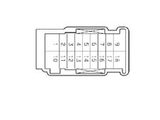
CONNECTOR B02E: CONNECTION BETWEEN DASHBOARD CONTROL UNIT (CPL) AND BODY COMPUTER (NBC) - CONNECTOR M01F
Applies to: engines: 1.8 T.SPARK; all production periods
Conn. | Pin | Function |
|---|---|---|
B02E | 1 | +30 from F-38 for door lock |
B02E | 2 | left/right brake light control signal from F-37 |
B02E | 3 | Reversing light activation positive signal at NBC |
B02E | 4 | Not available |
B02E | 5 | B - CAN B from NBC |
B02E | 6 | Heated rear window relay coil control negative signal (T11) |
B02E | 7 | B - CAN A from NBC |
B02E | 8 | Dipped beam relay coil control negative signal (T01) |
B02E | 9 | INT from ignition switch for NBC |
B02E | 10 | Door lock motors |
B02E | 11 | Door release motors |
B02E | 12 | Parking light control positive signal from ignition switch |
B02E | 13 | INT from F-37 for NQS |
B02E | 14 | Service relay coil control negative signal (T13) |
B02E | 15 | INT for F-51 from NBC |
B02E | 16 | Not available |
B02E | 17 | +30 from F-39 for NIT, volumetric sensors, antitheft siren, EOBD diagnostic socket, NCL, NPG, puddle lights |
B02E | 18 | +30 from CPL (CBA) fuse for BC (immobiliser, CAN, side lights, rear fog lamps, brake lights, SBMT driver, interior lighting, brake lights) |
B02E | 19 | +30 from F-53 for turn signals/hazard warning, NQS |
B02E | 20 | Door lock earth |
Applies to: engines: 1.8 T.SPARK, 2.0 JTS, 1.9 JTD 16V; all production periods
BODY COMPUTER NODE E04 (NBC)
The Body Computer Node (NBC) controls many functions microelectronically and is interconnected to the facia electromechanical control unit (CPL). They are located in the area beneath the facia and make up a single unit known as the facia node (NPL).
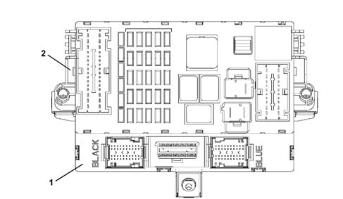
1 - Body computer (NBC)
2 - Facia control unit (CPL)
NBC+CPL = NPL
The electronic part and the electromechanical part both act as interconnections with the system and contain fixed connectors for connection to front, rear and facia wiring.
The fuses and relays are fitted to the electromechanical part while the electronic part contains a fixed EOBD connector Diagnosis/programming of the NCM, NFR, NCR and CAB are carried out using a K line via this connector and also diagnosis/programming of components with a B-CAN interface.
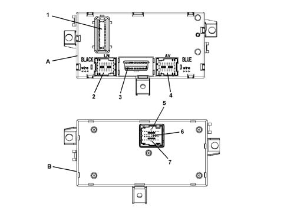
A - NBC control unit, front view
B - NBC control unit, rear view
1 - Connector M01F 20 PIN
2 - Connector M01E 40 PIN
3 - Connector M012G EOBD diagnostic socket
4 - Connector M01A 40 PIN
5 - Connector M01B 9 PIN
6 - Connector M01C 18 PIN
7 - Connector M01D 9 PIN
Body computer control unit pin out nbc
M01F connector (20 way)
CONNECTOR M01F: CONNECTION BETWEEN BODY COMPUTER (NBC) AND DASHBOARD CONTROL UNIT (CPL) - CONNECTOR B02E
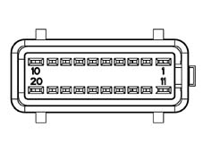
Connector pin-out
Applies to: engines: 1.8 T.SPARK; all production periods
Conn. | Pin | Function |
|---|---|---|
M01F | 1 | +30 from F-38 for door lock |
M01F | 2 | Left/right brake light control signal from F-37 |
M01F | 3 | Reverse gear engagement positive signal |
M01F | 4 | Not available |
M01F | 5 | B-CAN B for CPL |
M01F | 6 | Heated rear window relay coil control negative signal (T11) |
M01F | 7 | B-CAN A for CPL |
M01F | 8 | Dipped beam relay coil control negative signal (T01) |
M01F | 9 | INT for NBC from ignition switch |
M01F | 10 | Door lock motors |
M01F | 11 | Door release motors |
M01F | 12 | Side light/parking light control positive signal from stalk unit/ignition switch |
M01F | 13 | INT from F-37 for NQS (connection with PG13, AV10) |
M01F | 14 | Service relay 2 coil control negative signal (T13) |
M01F | 15 | INT from ignition switch for F -51 |
M01F | 16 | Not available |
M01F | 17 | +30 from F-39 for NIT, volumetric sensors, antitheft siren, EOBD diagnostic socket, NCL, NPG, puddle lights |
M01F | 18 | +30 for NBC (immobiliser, CAN, side lights, rear fog lamp, SBMT driver, control driver + LIGHTS, brake lights) |
M01F | 19 | +30 from F -53 for direction indicators/hazard warning lights, NQS |
M01F | 20 | Door lock earth |
Applies to: engines: 1.8 T.SPARK, 2.0 JTS, 1.9 JTD 16V; all production periods
Connector M01E (40 way) black
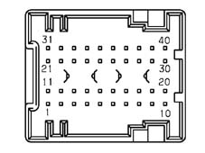
Connector pin-out
Applies to: engines: 1.8 T.SPARK; all production periods
Conn. | Pin | Function |
|---|---|---|
M01E | 1 | Driver side door opening negative signal for NCR |
M01E | 2 | Operation of left side repeater (not used) |
M01E | 3 | Right rear turn signal activation |
M01E | 4 | Fuel level signal from tank |
M01E | 5 | Left rear side light activation |
M01E | 6 | Right rear side light activation |
M01E | 7 | Serial line with CVA |
M01E | 8 | Negative signal from switch indicating driver's door open (NA) |
M01E | 9 | Left number plate light activation ( |
M01E | 10 | Roof closure control negative signal at CTA (not used) |
M01E | 11 | Passenger door open signal on door pillar (not used) |
M01E | 12 | Left rear turn signal activation |
M01E | 13 | Operation of right side repeater (not used) |
M01E | 14 | Negative signal from handbrake engaged indicator switch (NA) |
M01E | 15 | Fuel level signal from tank (negative) |
M01E | 16 | Negative signal from right rear door open indication switch (NA) |
M01E | 17 | NA engine bar signal (lock) Front passenger door |
M01E | 18 | K line aggregate 3 (not used) |
M01E | 19 | Direct door release control negative signal from passive entry control unit (not used) |
M01E | 20 | Right rear fog lamp activation (not used) |
M01E | 21 | Front central courtesy light timed/dimmed negative control |
M01E | 22 | Right brake light activation |
M01E | 23 | +30 SBMT front courtesy light |
M01E | 24 | NA engine bar signal (lock) Front door door |
M01E | 25 | Negative signal from NA front passenger door open indicator switch |
M01E | 26 | Negative signal from right rear door open indication switch (NA) |
M01E | 27 | +30 from F -39 J.C. +30 electronic NPG |
M01E | 28 | Analogue signal from front courtesy light activation control (not used) |
M01E | 29 | Courtesy light fixed activation control positive signal (not used) |
M01E | 30 | Timed negative control for courtesy light (not used) |
M01E | 31 | Left rear fog lamp activation |
M01E | 32 | Left brake light activation |
M01E | 33 | +30 SBMT driver/passenger sun visor, rear courtesy light, boot courtesy light ( |
M01E | 34 | NC engine bar signal (release) Front door driver's side |
M01E | 35 | NC engine bar signal (release) Front door passenger side |
M01E | 36 | Negative signal from boot open indicator switch (NA) |
M01E | 37 | Rear courtesy light timed/dimmed control |
M01E | 38 | Right number plate light activation |
M01E | 39 | +30 from F-39 for CAV - NVB - NRR (BOSE only) |
M01E | 40 | Power point lighting activation dependent upon side lights (not used) |
Applies to: engines: 1.8 T.SPARK, 2.0 JTS, 1.9 JTD 16V; all production periods
Connector M01G for EOBD diagnostic socket (16 way)
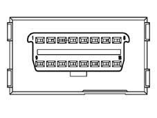
Connector pin-out
Applies to: engines: 1.8 T.SPARK; all production periods
Conn. | Pin | Function |
|---|---|---|
M01G | 1 | K line for NFR |
M01G | 2 | C-CAN H for fault diagnosis |
M01G | 3 | K line for Air Bag |
M01G | 4 | Power earth |
M01G | 5 | Signal earth |
M01G | 6 | B-CAN B for tester |
M01G | 7 | NCM/NCR fault diagnosis |
M01G | 8 | Immobiliser K line |
M01G | 9 | Prep. for aggregates 2 (not used) |
M01G | 10 | C-CAN L for fault diagnosis |
M01G | 11 | Not available |
M01G | 12 | Not available |
M01G | 13 | Prep. for aggregates 3 (not used) |
M01G | 14 | B-CAN A for fault diagnosis ( |
M01G | 15 | Line L |
M01G | 16 | + Battery for EOBD socket from F -39 |
Applies to: engines: 1.8 T.SPARK, 2.0 JTS, 1.9 JTD 16V; all production periods
Connector M01A (40-way) blue
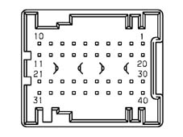
Connector pin-out
Applies to: engines: 1.8 T.SPARK; all production periods
Conn. | Pin | Function |
|---|---|---|
M01A | 1 | Reverse engagement positive signal for stalk (not used) |
M01A | 2 | Left side repeater activation |
M01A | 3 | Screen fitting (immobiliser aerial) |
M01A | 4 | Immobilizer aerial |
M01A | 5 | Immobilizer aerial |
M01A | 6 | Two-way serial line with NFR (not used) |
M01A | 7 | Speedometer signal input from NFR |
M01A | 8 | Fog lamp relay coil control negative signal |
M01A | 9 | Main beam relay coil control negative signal |
M01A | 10 | INT from F -37 for speedometer sensor |
M01A | 11 | +30 from F-39 for NCL |
M01A | 12 | Fuel flap opening relay coil control negative signal |
M01A | 13 | Negative signal from stalk unit for headlamp washer control/ |
M01A | 14 | Headlamp washer relay coil control negative signal |
M01A | 15 | Earth for speedometer pulse generator on gearbox (not used) |
M01A | 16 | K line for NFR |
M01A | 17 | Speedometer signal input from pulse generator on gearbox (not used) |
M01A | 18 | Brake fluid level negative signal from NA switch |
M01A | 19 | Recharging warning light control (alternator D+ signal) |
M01A | 20 | K line for NCM fault diagnosis |
M01A | 21 | Aerial for radio receiver (earth) |
M01A | 22 | Right side direction indicator repeater activation ( |
M01A | 23 | Signal from left/right front brake pad wear sensor |
M01A | 24 | Negative signal from boot open indicator switch (NC) |
M01A | 25 | AF serial line siren (connection with LN7) |
M01A | 26 | B-CAN A for NCL |
M01A | 27 | B-CAN B for NCL |
M01A | 28 | Speedometer signal repeater |
M01A | 29 | IS05 interface for communication with immobiliser/NCM (recovery) |
M01A | 30 | Right front side light activation |
M01A | 31 | Aerial for radio receiver |
M01A | 32 | C-CAN L for NCR and NAS |
M01A | 33 | C-CAN H for NCR and NAS |
M01A | 34 | +30 from F-39 for antitheft siren |
M01A | 35 | K line for NCR |
M01A | 36 | C-CAN L for NCM |
M01A | 37 | C-CAN H for NCM |
M01A | 38 | Left front turn signal activation |
M01A | 39 | Right front turn signal activation |
M01A | 40 | Left front side light activation |
Applies to: engines: 1.8 T.SPARK, 2.0 JTS, 1.9 JTD 16V; all production periods
Connector M01D M01C M01B (9+18+9 way)
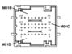
Connector pin-out
Applies to: engines: 1.8 T.SPARK; all production periods
Conn. | Pin | Function |
|---|---|---|
M01D | 1 | Fog lamp control negative signal |
M01D | 2 | Central door open/locking control negative signal from dashboard |
M01D | 3 | +30 from F-53 for NQS |
M01D | 4 | Dipped beam control negative signal from stalk unit |
M01D | 5 | B-CAN A for NQS |
M01D | 6 | B-CAN B for NQS |
M01D | 7 | RH turn signal/parking light control negative signal from stalk unit |
M01D | 8 | NBC signal earth |
M01D | 9 | NBC power earth |
M01C | 10 | NBC power earth |
M01C | 11 | K line aggregates 2 (not used) |
M01C | 12 | K line for airbag |
M01C | 13 | Door status indicator led activation on PCC (negative control) |
M01C | 14 | Deterrent led activation (antitheft indication) (positive control) |
M01C | 15 | +30 SBMT predisp. (not used) |
M01C | 16 | +30 SBMT glove compartment light |
M01C | 17 | Door release control negative signal from dashboard |
M01C | 18 | Activation of lighting (bulb) dependent upon side lights car phone, cigarette lighter; |
M01C | 19 | Earth for PCS |
M01C | 20 | Fog lamps control negative signal |
M01C | 21 | Rear fog lamp on indication led activation on PCC (positive control) |
M01C | 22 | Fog lamp on indication led activation on PCC (negative control;) |
M01C | 23 | Speedometer signal repeater for sun roof (not used) |
M01C | 24 | B-CAN B for NIT (not used) |
M01C | 25 | B-CAN A for NIT (not used) |
M01C | 26 | +30 from F-39 for NIT |
M01C | 27 | INT/A positive signal from ignition switch |
M01B | 28 | Side light control negative signal (from stalk unit) |
M01B | 29 | Hazard warning light on indication led activation (positive control) |
M01B | 30 | LH turn signal/parking light control negative signal from stalk unit |
M01B | 31 | INT from F-37 for NQS |
M01B | 32 | Heated rear window control negative signal (not used) |
M01B | 33 | Main beam headlamp or headlamp flasher control negative signal from stalk unit |
M01B | 34 | Hazard warning light control negative signal |
M01B | 35 | Rear fog lamp control negative signal from light control panel |
M01B | 36 | Earth for NQS |
Applies to: engines: 3.2 V6; all production periods
SPECIFCATIONS
ENGINE COMPARTMENT JUNCTION UNIT
The 3.2 V6 version is equipped with a different electromechanical control unit including (micro type) fuses and relays and is located in the engine compartment, next to the battery.
The protective cover guarantees the required seal for the connectors, relays and fuses.
There is a bracket next to the control unit which houses other (MAXI type) relays and is also protected by a special cover.
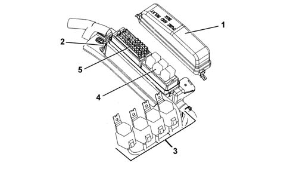
1 - Protective cover
2 - Engine compartment junction unit
3 - Maxi type relays (outside the junction unit)
4 - Micro type relays
5 - System protective fuses
In the more comprehensive version, the junction unit protects the electrical equipment by means of the following fuses:
CODE | COMPONENT | In[A] | TYPE |
|---|---|---|---|
F1 | FUSE COMPRESSOR | 7.5 | mini |
F2 | FUSE MAIN BEAM HEADLAMPS | 15 | mini |
F3 | FUSE HORNS | 15 | mini |
F4 | FUSE FUEL PUMP | 15 | mini |
F5 | FUSE HEADLAMP WASHER | 20 | mini |
F6 | FUSE I.E. SYSTEM | 7.5 | mini |
F7 | FUSE FOG LIGHTS | 15 | mini |
F8 | FUSE I.E. PRIMARY SERVICES | 7.5 | mini |
F9 | FUSE I.E. SECONDARY SERVICES | 15 | mini |
F10 | FUSE COILS/INJECTORS | 15 | mini |
F11 | FUSE 15/54 | 7.5 | mini |
F12 | FUSE 15/54 I.E. SYSTEM | 7.5 | mini |
The junction unit contains the following relays:
CODE | COMPONENT | In[A] | TYPE |
|---|---|---|---|
T02 | MAIN BEAM RELAY | 20 | micro |
T03 | HORN RELAY | 20 | micro |
T05 | COMPRESSOR RELAY | 20 | micro |
T09 | INJECTION RELAY | 30 | micro |
T10 | FUEL PUMP RELAY | 20 | micro |
T14 | FOG LIGHTS RELAY | 20 | micro |
The following relays are located on the bracket outside the junction unit:
CODE | COMPONENT | In[A] | TYPE |
|---|---|---|---|
a | RADIATOR FAN 1ST SPEED RELAY | 50 | MAXI |
b | RADIATOR FAN 2ND SPEED RELAY | 50 | MAXI |
c | RADIATOR FAN 2ND SPEED RELAY | 50 | MAXI |
Location of fuses and relays
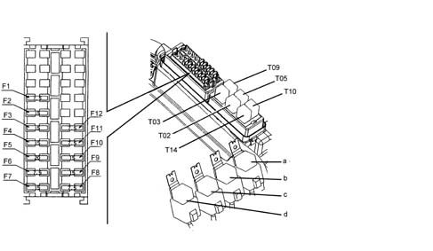
FACIA CONTROL UNIT (CPL)
See the description for the other engine types (2.0 JTS - 1.9 JTD 16v)
BODY COMPUTER (NBC)
See the description for the other engine types (2.0 JTS - 1.9 JTD 16v)